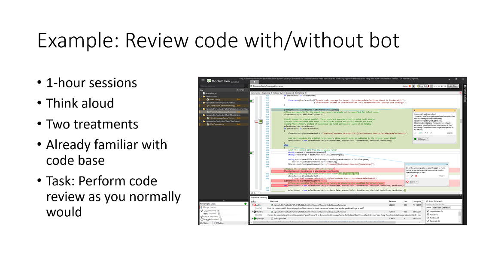
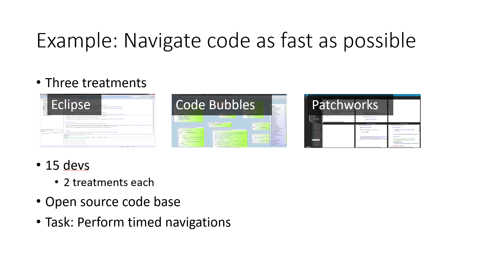
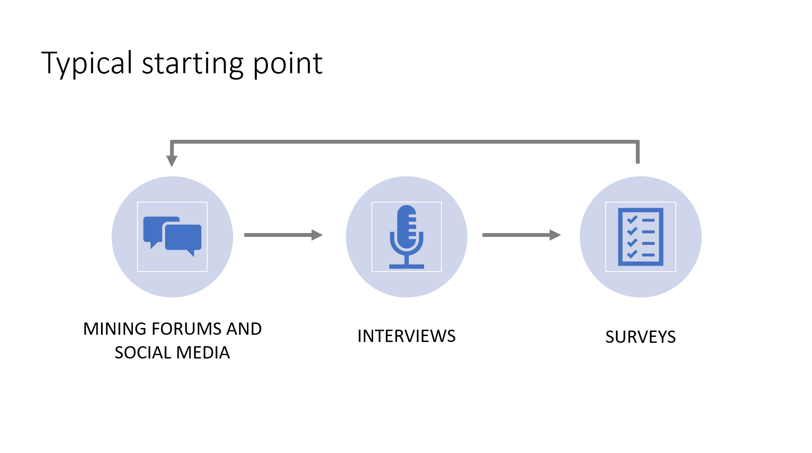
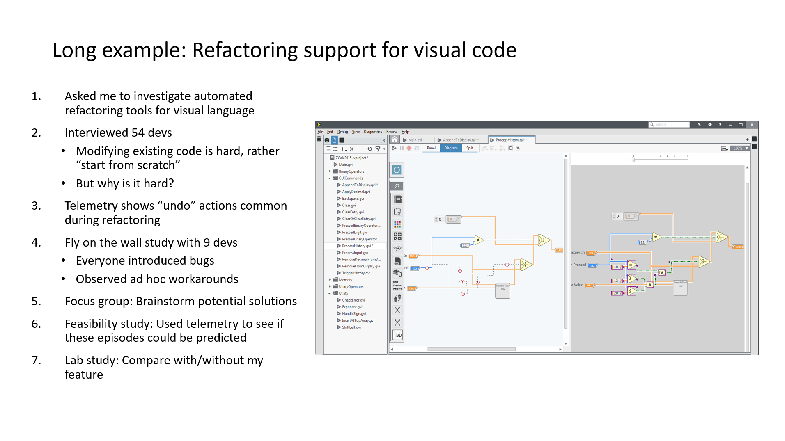
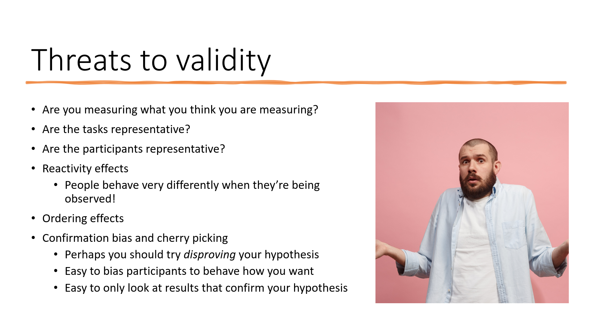

I work on AI + dev tools.
I'm a big advocate for HCI being integrated into all disciplines, no matter your job title. Anyone on a software team could run a user study—an engineer, PM, designer, researcher, manager, etc.
Showing up to a meeting with actual evidence to support you is very powerful. It can often be done without too much effort. And even if you aren't the one interacting with users directly, there is a lot of value in empathizing with users.
I recently gave a presentation about conducting user studies that went over the methods I tend to use and my experiences with them. My goal was to give a taste of conducting user studies even to someone that may not have a background in user research or HCI.
This is the same content as that presentation but in an elaborated text form. I hope you find it helpful!
First, what are you trying to learn? This can be surprisingly hard to answer, and sometimes we work on a project for quite a long time before we know the answer.
You will likely find yourself at one of these stages at some point:
Towards addressing each of these, there are a zillion methods, including:
And so on.
Let's look at a handful of methods that I have found particularly useful in both industry and academic settings.
Imagine we have already built a prototype of a feature/product. How do we evaluate it? How do we know that it is better than the competition? Maybe we built the wrong thing or got some details wrong or misinterpreted our users.
What does your intuition say to do?
My initial reaction is to run a comparative lab study. This is a controlled head-to-head comparison between 2 or more UIs for similar tasks with actual participants. It enables us to answer, "do users perform better with X than with Y?" given a specific environment.
A typical session lasts 45-90 minutes per participant and follows a procedure like:
There are many design choices for a lab study that you must address, such as:
When deciding what to compare your feature/product to, you can either go with the state of the practice (i.e., the most popular competitor) or to the most reasonable baseline (e.g., if you are evaluating a VS Code plugin, then compare to vanilla VS Code). You could even compare multiple of your own designs.
It is good to collect a mix of quantitative and qualitative data. The standard performance measures are task time and task correctness. I like to also count how many mistake or backtracking actions were performed. Additionally, there are numerous questionnaires that have been well studied (e.g., NASA TLX or SUS). Then at the end of the study it is common to ask participants to compare the treatments and ask open-ended questions about their opinions or to rank the treatments by preference.
All of this data helps you build an understanding of the pros and cons of each design.
I'll also throw out there that you should try to be unbiased as possible. Don't interrupt participants during the tasks and don't push them towards doing what you want. Other important questions to consider include: Which order will you give the treatments and the tasks? Is the task fair for all the treatments? Are these participants like the users we are targeting? More on these questions later.
Example #1: To understand the effect of an automated code reviewing bot, we asked participants to conduct two code reviews: one with and one without our automated reviewer. We tracked the time taken to conduct the review (the participant decided when they were done), comments left, regions of code viewed, and interactions with the bot's comments. We also asked open-ended questions at the end about their review strategy and their opinions on the automated reviewer.
You can read more about this project in our CHI'18 paper. It also includes a field deployment and survey.
Example #2: I wanted to understand the effect of the code editor on code navigation time. To do so, I asked developers to perform a sequence of navigations from a specific method X to a specific method Y. I timed each of these navigations and they did so using different code editors. The task is purposely artificial since I wanted isolate just the mechanical time taken to navigate code. There were 3 treatments but each participant only received 2.
You can read more about this study in our CHI'14 paper. We followed it up with a more realistic study of developers debugging code in our CHI'17 paper.
It can be a big investment to get participants. Luckily, there are some lighter weight methods we can use to evaluate a UI without users!
The most straight forward approach is to count the GUI actions required to perform some task with your feature/product. That likely means keystrokes, mouse movements, and clicks.
Do this for a several common tasks. You can even assume you are a perfect user that makes no mistakes and knows the shortest path to completing the tasks.
Now go do these same tasks using your competition and count the GUI actions. How does your UI compare?
For an example, see our publication comparing the GUI actions needed to navigate code in different code editors. I even coded up a simulator to automate the process of counting GUI actions for different UI designs.
More formally, you can do a cognitive walkthrough. It is an analytical method where you go through each step of the task and ask yourself a series of questions to understand the decisions that a user must make along the way. This is useful for uncovering assumptions we made about the design without realizing it. Traditionally, you ask a few people to do the same cognitive walkthrough and then you discuss the findings together. You can even adopt a persona, such as a new user, a user from a different domain, or a user transitioning from a specific competing software (e.g., walkthrough Microsoft Excel as a user that has only ever Google Sheets).
Let's take a step back and look at methods that we can use to understand what problems our users are facing and then how to design a potential solution.
There is a rather inexpensive sequence of methods I like to use: forum mining, interviews, and surveys. Repeat.
We gather data from forums/social media to get initial data on pain points. Then we conduct interviews with a small set of users to drill into these pain points. Then we use surveys to validate our findings with a large set of users.
To gather rich qualitative data, we can use my favorite method: fly on the wall. Also known as contextual inquiry or shadowing. This method involves observing users in their normal work environment as they do their own tasks with limited or no interruptions from you.
I always learn so much from watching users. Things that I never thought to ask or that they never thought to mention in an interview come up every time.
The problem is that it can be expensive getting to your users and it can be pretty invasive. At big companies you can likely find users internally. In my experience, people are pretty open to letting you observe them over their shoulder. They're often just happy that someone is trying to fix their problems!
Here is a long example of how I tied together several different methodologies. Note that I did not originally plan this, but rather I reacted to the results after each step. I actually underestimated the project and fell victim to some false assumptions!
You can read more details about this project: Building solutions to problems that no one knows exist yet or more formally in our publications, VL/HCC'16 and VL/HCC'18.
You do have to be considerate of how you design the study and how you interpret the data. There are many threats to validity and biases that come up. Every study and analysis has weaknesses, just be mindful of them and triangulate if possible.
Are you measuring what you think you are measuring? My classic example of this is grades is school. Do grades measure learning or intelligence or effort or the teacher or something else?
Is your study realistic? Are the tasks and participants representative of what you're targeting?
Don't forget that by observing something that you will influence the outcome. People behave very differently when they're being observed. Ever do a coding interview where someone blankly stares at you? It adds a lot of stress. Ever take an important test? You know your performance on it matters. Now consider the situation where we want feedback from someone on our new UI design. Participants might think we put a lot of effort into it and will want to only tell us nice things!
The order in which treatments and tasks are given will also have an impact. Users generally perform better on the later tasks since they know what is expected and warm up. If you have a lot of tasks though then they might get tired and start putting in minimal effort (I know I have done this with surveys...). You do things like counterbalance treatments so that some participants will get Treatment Foo then Treatment Bar but others will get Treatment Bar then Treatment Foo. I also like to give warmup tasks for each treatment.
A collaborator of mine passed on some great advice: "have you done everything you can to disprove your hypothesis?"
There are many more methodologies out there. These are just my preferred methods in my domain. You can get quite creative with user studies though!
For example, Wizard of Oz studies allow you to emulate a complex system that you haven't yet built. I once participated in such a study where I interacted with a voice assistant (think Alexa or Siri) but actually there was a person in another room typing the responses into a computer. It fooled me!
My favorite example of a creative user study involved measuring the engagement of middle school girls using Alice, a educational programming tool. The researchers operationalized engagement by looking at how often students "snuck" extra time with Alice when they were supposed to be taking a break (paper). I would have never thought of that!
An area that I am interested to run more studies on is the learnability of tools. Some tools are great for experts but difficult to learn. Some tools are easy to learn but don't allow experts to be performant. Understanding that dichotomy and the transition between seems to be understudied in most software. Just tacking on shortcuts for the experts and a tutorial video for the novices is not sufficient!
Anyway, I hope you find this of value. I really enjoy running user studies and learning new methods, so look out for follow ups to this post.
Here are some resources that have helped me if you want to read more: